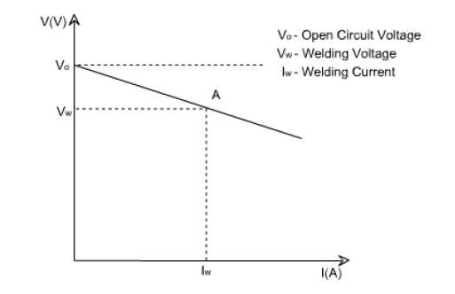
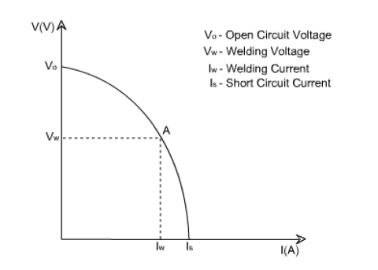
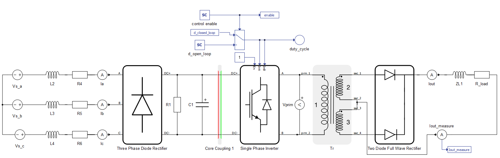
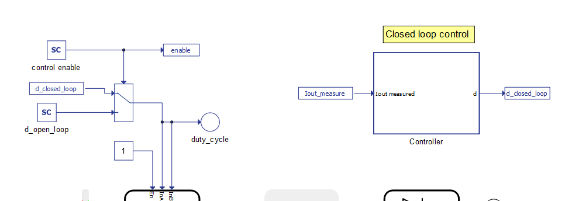
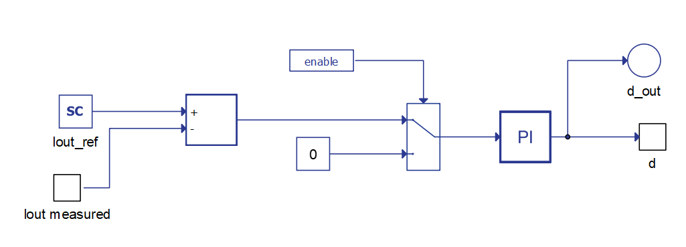
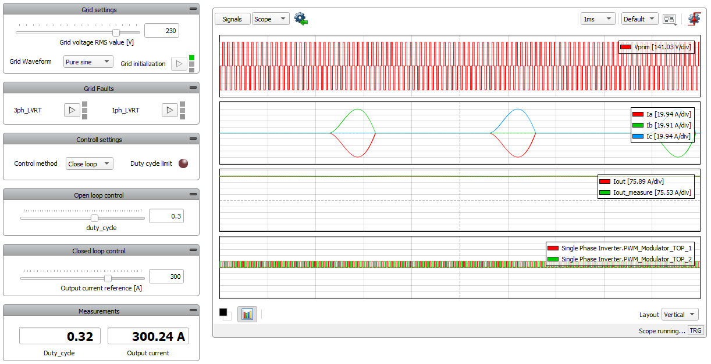
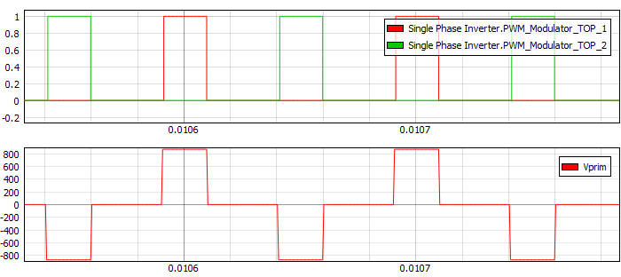
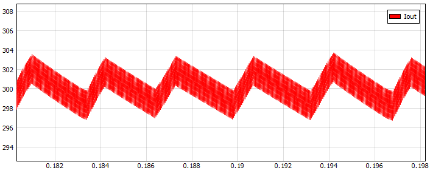
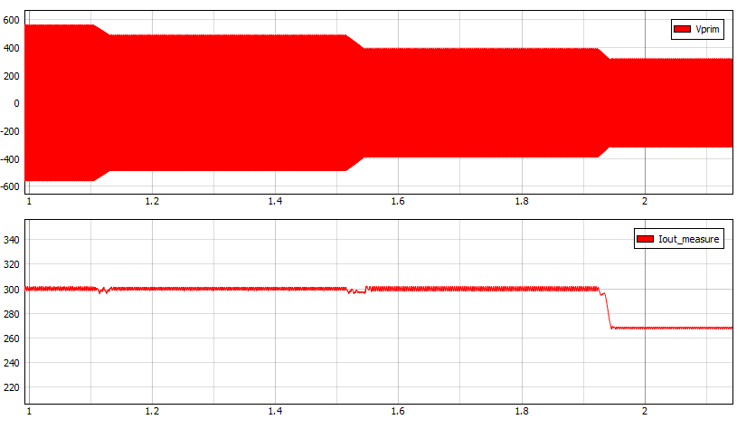
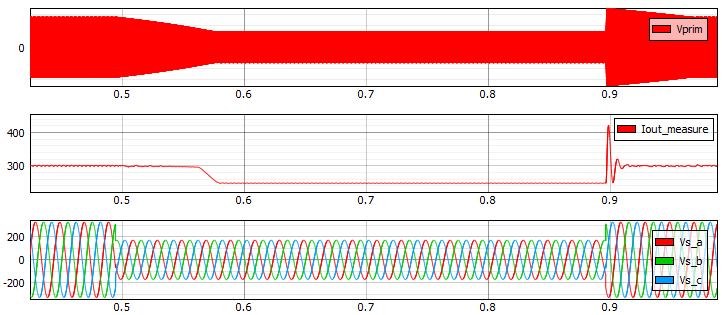

Welding inverter
Demonstration of normal and low voltage ride through (LVRT) operation of a constant current electric arc welding inverter.
Introduction
Welding is an integral and energy intensive part of the construction, manufacturing, and maintenance industries. In electric arc welding, the melting energy is provided by establishing an arc between two electrodes, where one of them is the metallic workpiece being welded. There are several technologies for electric arc welding, each with their own unique power quality requirements. For instance, welding technologies such as metal inert gas (MIG) and submerged arc welding (SAW) requires constant voltage power supply. The constant voltage is shown on the left of Figure 1, also known as the "straight" or "flat" characteristic.


Meanwhile, shielded metal arc welding (SMAW) and gas tungsten arc welding (GTAW) requires constant current power supply. The profile for constant current power sources are shown on the right of Figure 1, also called the droop volt/ampere curve. In either case, a change in the voltage causes a small change in the welding current. The welder controls the length of the arc by regulating the voltage, which essentially controls the heat input to the arc to produce the required weld.
The droop volt/ampere curve (Figure 1, right) shows cases of both open circuit voltage and short circuit current. A higher value of open circuit or no-load voltage makes establishing the welding arc easier and extinguishing the arc more difficult. It is desired to have a short circuit current with a value higher than the nominal load in order to prevent the electrode from sticking to the workpiece when striking the arc [2].
This model implements the constant current power supply topology used in arc welding inverter applications, together with a closed loop control. Performance in a variable grid voltage condition is also tested.
Model description
The electrical part of the model is shown in Figure 2. The grid is modeled using voltage sources, resistance, and inductance for each phase. Grid parameters for inductance and resistance are set in Model Initialization panel.

A three-phase diode rectifier is used to convert AC voltage into DC, which is further smoothed by a DC link capacitor. A single-phase inverter connects to the other side of the DC link, which inverts DC voltage to high frequency AC voltage. Switching frequency (fs) for a single-phase inverter is set in the Model initialization panel. High frequency AC voltage is fed to the high frequency transformer, which steps down the voltage to the desired level. Then, voltage is rectified by the diode full-wave rectifier and the current to the load is fed via the output inductor. The load is modeled using the resistance component R_load. Measurement of the output current for the control loop is done using ampere meter.
The control part of the model is represented by a blue color and is shown in Figure 3. The single-phase inverter can be controlled in open-loop and closed-loop mode. Operation mode selection is done through the SCADA Input component.

The closed-loop control is implemented in the Controller subsystem, which is shown in Figure 4. The reference current value is set using the SCADA input component. Parameters for the PI regulators kp and ki are set in the Model Initialization panel. The controller calculates the duty cycle value based on the reference current value and the measured output current.

In this model, a core coupling element is used to overcome hardware limitations on the number of power converters per core. The core coupler element divides the electrical circuit in two parts, allowing two cores to run, each with a 0.5 µs simulation time step.
Additional information about Circuit Partitioning can be found here.
Simulation
This application comes with a pre-built SCADA panel (Figure 5). The panel offers most essential user interface elements (widgets) to monitor and interact with the simulation in runtime. You can customize it freely to fit your needs.

The following cases describe normal operational mode and behavior during a low-voltage ride-through (LVRT) fault.
- Normal operation mode: Grid voltage is set to 230 V using the Grid Voltage slider.
Reference value for the output current is set to 300 A using the Output Current Reference
slider widget. For this operation point, the calculated duty cycle has a value of 0.32.
According to the duty cycle, the PWM signals are generated as shown in the top graph of
Figure 6. The inverter output
voltage (Vprim) is generated based on PWM signals, as shown in the bottom graph of Figure 6.
Figure 6. PWM signals and inverter output voltage 
In Figure 7, the output current waveform is shown. This demonstrates that the rms value is close to the reference current of 300 A.
Figure 7. Output current 
Figure 8 shows that the controller keeps the reference value of the current while voltage changes, as long as it is within operational range. This is because the welding inverter modeled here is controlled to behave as a constant current power supply. The controller passes its duty cycle limit of 0.5 at around 1.9 s, which makes it unable to provide the reference current value for the set voltage level. This effect is visible in the bottom graph of Figure 8.
Figure 8. Constant current power supply 
- Operation of the inverter during three phase LVRT: LVRT is implemented using the Macro Button
widget. The amplitude of the ideal voltage source is set from 230 V to 115 V for a period of
500 ms, after which the voltage is restored to its starting value. The three-phase LVRT can
be observed with the phase voltage measurements shown in the bottom graph of Figure 9.
Figure 9. Inverter operation during three phase LVRT 
The middle graph of Figure 9 shows a drop in the output current. This is caused by reaching the duty cycle limit, which renders the system unable to keep current at the desired level. At 0.9 s, the recovery of the grid voltage caused the total welding current to overshoot. This shows that voltage disturbances at the grid side can impact the quality of the welding process.
Test automation
We don’t have a test automation for this example yet. Let us know if you wish to contribute and we will gladly have you signed on the application note!
Example requirements
Table 1 provides detailed information about the file locations and hardware requirements for running the model in real-time, followed by the HIL device resource utilization when running the model using this minimal hardware configuration. This information is provided to help you with running and customizing the model as you see fit.
| Files | |
|---|---|
| Typhoon HIL files | examples\models\power supplies\welding inverter welding inverter.tse welding inverter.cus |
| Minimum hardware requirements | |
| No. of HIL devices | 1 |
| HIL device model | HIL101 |
| Device configuration | 1 |
| HIL device resource utilization | |
| No. of processing cores | 2 |
| Max. matrix memory utilization | 18.55% (core1) 14.62% (core0) |
| Max. time slot utilization | 65.45% (core1) 47.27% (core0) |
| Simulation step, electrical | 0.5 µs |
| Execution rate, signal processing | 100 µs |
References
Authors
[1] Kristian Monar